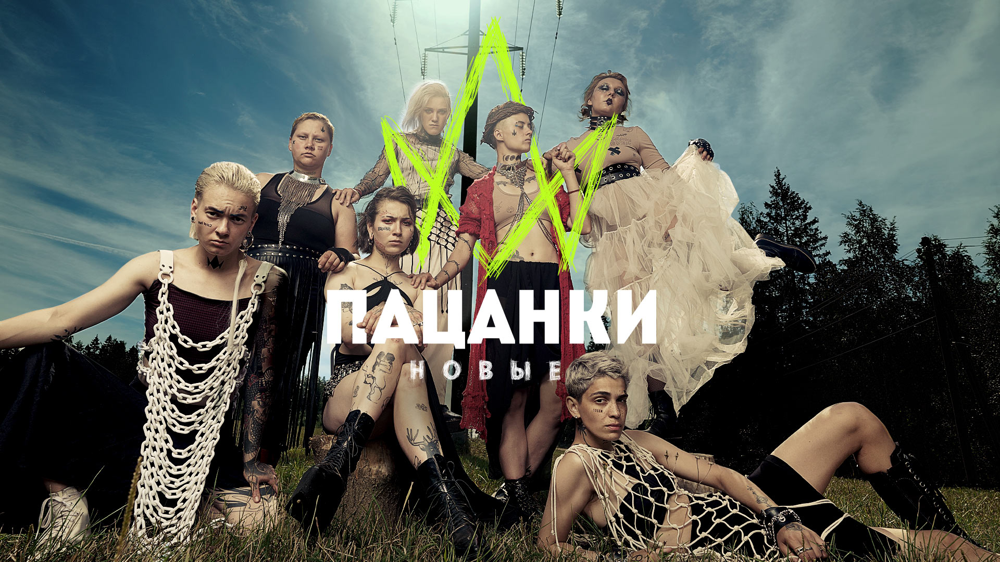

Пацанки. Новые
Новый учебный год в Школе Леди. Героини проекта – девушки с непростыми судьбами, которые приходят на проект избавиться от зависимостей и изменить свою жизнь. В новом сезоне в Школу Леди вернется Татьяна Полякова — преподаватель по этикету. Вместе с Лаурой Лукиной и Марией Третьяковой она станет наставником девочек и помощником на пути к новой жизни.
Смотреть